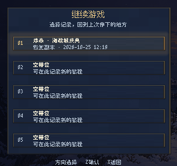
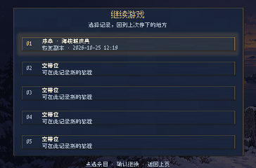

<!doctype html><html lang="zh-CN"><meta charset="utf-8"><meta name="viewport" content="width=device-width,initial-scale=1"><title>存档恢复入口 · 后台验收</title><style>body{margin:0;background:#131b26;color:#e4e7ec;font:16px/1.7 system-ui,sans-serif}main{max-width:1000px;margin:auto;padding:30px 24px}a{color:#a8cdfa}figure{margin:24px 0;padding:20px;background:#1f2c3b;border-radius:14px}img{max-width:100%;image-rendering:pixelated;display:block;margin:14px auto}h1{font-size:28px}figcaption{font-weight:600}</style><main><h1>存档恢复入口 · 后台验收</h1><p>2026-10-25 · 真实引擎后台渲染，保持原始像素比例。不是iPhone实机截图。</p><p><a href="README.md">修改与验证范围</a> · <a href="image-manifest.json">图片尺寸与无损压缩记录</a></p><figure><figcaption>recovery-256</figcaption></figure><figure><figcaption>recovery-364</figcaption></figure></main></html>